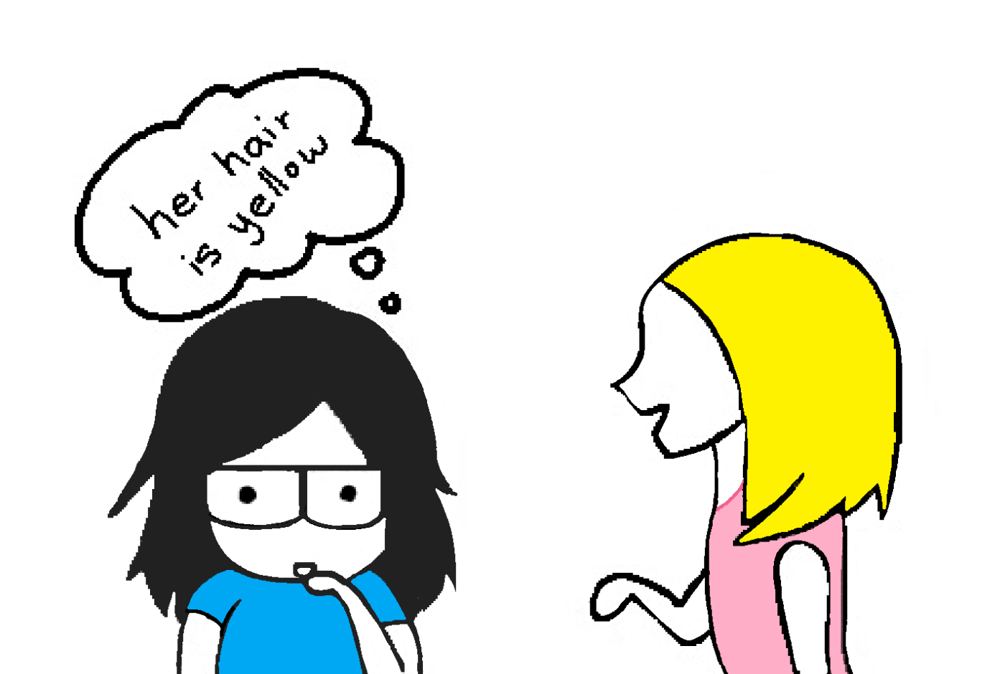
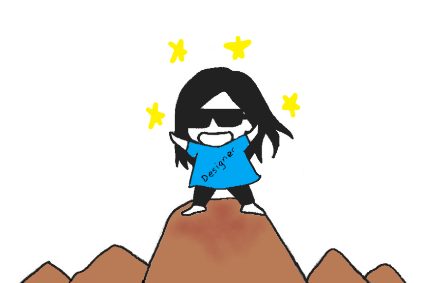

What's your journey?
My journey started in 2005 when I moved to the U.S. I spent most of my time online reading manga and talking to friends as a way to cope with being homesick. This started my interest in creating online forums, finding visual templates, and playing around with the code to customize it. I loved playing around with mySpace at the time.
- 
When I started High School, I decided to take 2 years of web design. This turned out to be a disappointment. All we did was learning HTML and Dreamweaver, which had little to no creative aspect. I didn’t know CSS existed, so I thought it was the limit of design.
At the end of high school, I remembered running across UI/UX design while researching for a college major. It seems at the time, the industry was quite young. There was no degree specified for it. There were also limited college classes offered. In the end, I decided to still submerge myself in the technology industry. So, I majored in Management Information Systems.
Post-college job hunt was brutal. My passion was not in the field I studied. The more I tried to covered up and acted as if I was pursuing the right path, the more miserable I felt.

I realized, I cannot go anywhere without a passion.
So I decided to re-evaluate what I enjoyed most. That’s when I came across UI/UX design again. The industry had grown quite a bit. It’s now easy defined and is vital everywhere. It surprised me how much it could affect our lives. A pretty design is the top of the iceberg. A successful design is one that changes the way people see and experience things. It changes perspectives, it informs, it persuades, and it’s powerful.
I realized I’ve always gravitated to it like a magnet ever since 2005. UI/UX design matches with my interest in creativity, technology, and psychology.
Having the gut to start over and invest in myself is my biggest accomplishment. It’s a big risk. A good one. I learned a lot and enjoyed what I do; even through the painstaking process, getting out of my comfort zone, and spending hours researching. In short, there is no other I enjoy doing.
So here I am, making a difference through design.
- 